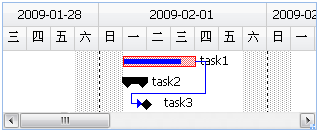

甘特图数据结构
EdoGantt只需要一个简单的JSON数据结构，就可以创建并显示一个web gantt。
如下所示：
[
{
UID: 1, //唯一标识符
Name: 'task1', //任务名称
Start: new Date(2009, 1, 2), //开始日期
Finish: new Date(2009, 1, 5), //完成日期
Critical: 1, //关键任务
PercentComplete: 80, //完成百分比
Baseline: [ //比较基准
{
Start: new Date(2009, 1, 2),
Finish: new Date(2009, 1, 3),
Duration: 123
}
]
},
{
UID: 2,
Name: 'task2',
Start: new Date(2009, 1, 2),
Finish: new Date(2009, 1, 3),
Critical: 1,
PercentComplete: 80,
Summary: 1, //摘要
children: [
{
UID: 3,
Name: 'task3',
Milestone: 1, //里程碑
PercentComplete: 100,
Start: new Date(2009, 1, 3),
Finish: new Date(2009, 1, 3),
PredecessorLink: [ //前置任务
{
PredecessorUID: 1, //前置任务UID
Type: 1 //任务相关性类型
}
]
}
]
}
]
甘特图显示的是一个任务树状结构，每个节点就是一个任务，任务属性描述如下：
UID：（必须）String。唯一标识符。是一个任意的字符串或数字，确保任务UID不重复。
Name：（必须）String。任务名称。
Start：（必须）Date。开始日期。
Finish：（必须）Date。完成日期。
PercentComplete：（必须）Number(0~100)。完成百分比。显示为上下居中的进度条。
PredecessorLink：（非必须）Array。前置任务。任务跟任务之间的可以有四种关系：完成-完成(FF) 0，完成-开始(FS) 1，开始-完成(SF) 2，开始-开始(SS) 3。当有前置任务时，根据不同的任务相关性类型，将会显示四种不同的任务箭头连线。
Summary：（非必须）Number(0或1)。摘要任务。当一个任务下有子任务的时候，这个任务就是摘要任务，当Summary为1时，此任务会两端黑色箭头显示。
Critical：（非必须）Number(0或1)。关键任务。当Milestone为1时，显示一个红色条形图。
Milestone：（非必须）Number(0或1)。里程碑。当Milestone为1时，显示一个菱形图标。
Baseline：（非必须）Array。比较基准。用于对比显示实际任务日期和计划日期。当gantt显示组件viewMode为“track”时，显示上下两个任务条形图。
使用以上的示例数据，生成的EdoGantt界面如下：

EdoGantt只要求一个极其精简的基本数据结构，不关心用户的数据从何而来。
用户可以任意组织存储自己的项目数据，无论是服务端是.NET还是JAVA，无论数据库是ORACLE还是MYSQL，无论数据传输方式是JSON还是XML，只需要在创建甘特图的时候，提供一个符合EdoGantt基础数据结构的JS对象，就可以正常使用EdoGantt，开发自己的项目管理系统。
相关示例： 基础甘特图